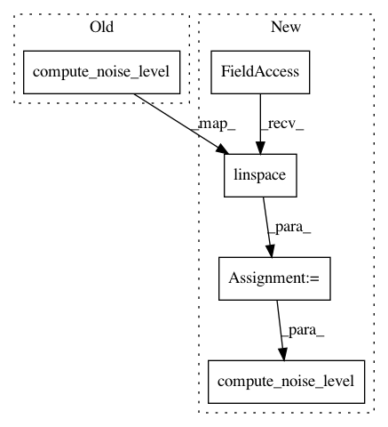

5a59467f34ea1b33a10ea8cc205c6b2bbb1bc158,TTS/bin/train_vocoder_wavegrad.py,,evaluate,#Any#Any#Any#Any#Any#,230
Before Change
// setup noise schedule and inference
noise_schedule = c["test_noise_schedule"]
if hasattr(model, "module"):
model.module.compute_noise_level(noise_schedule["num_steps"],
noise_schedule["min_val"],
noise_schedule["max_val"])
// compute voice
x_pred = model.module.inference(m)
else:
model.compute_noise_level(noise_schedule["num_steps"],
After Change
// setup noise schedule and inference
noise_schedule = c["test_noise_schedule"]
betas = np.linspace(noise_schedule["min_val"], noise_schedule["max_val"], noise_schedule["num_steps"])
if hasattr(model, "module"):
model.module.compute_noise_level(betas)
// compute voice
x_pred = model.module.inference(m)
else:
model.compute_noise_level(betas)
// compute voice
x_pred = model.inference(m)
// compute spectrograms
In pattern: SUPERPATTERN
Frequency: 3
Non-data size: 5
Instances
Project Name: mozilla/TTS
Commit Name: 5a59467f34ea1b33a10ea8cc205c6b2bbb1bc158
Time: 2020-11-14
Author: erogol@hotmail.com
File Name: TTS/bin/train_vocoder_wavegrad.py
Class Name:
Method Name: evaluate
Project Name: mozilla/TTS
Commit Name: 5a59467f34ea1b33a10ea8cc205c6b2bbb1bc158
Time: 2020-11-14
Author: erogol@hotmail.com
File Name: TTS/bin/train_vocoder_wavegrad.py
Class Name:
Method Name: train
Project Name: mozilla/TTS
Commit Name: 79ed5debcd6c5b5adfa86183b35a6a05765a20e8
Time: 2020-11-17
Author: erogol@hotmail.com
File Name: tests/test_wavegrad_train.py
Class Name: WavegradTrainTest
Method Name: test_train_step